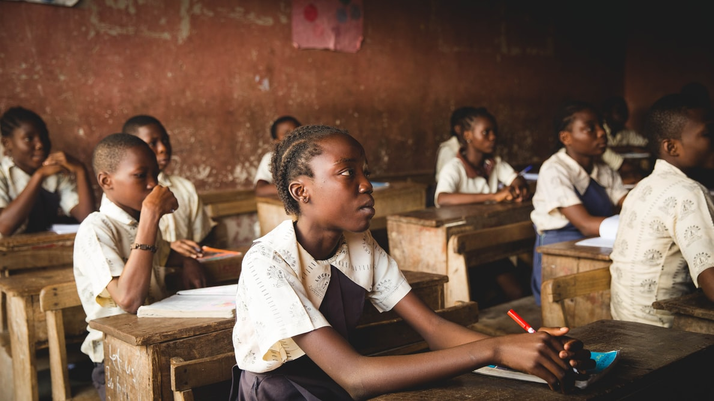

Young Africa also believes in thatto tackle the global challenges facing humanity, it is necessary to leverage the mechanisms of big business to effect positive social change. To achieve this, Young partners with 190+ internationally-renowned businesses, and welcomes their highest achieving young employees with a commitment to social impact, to the Young Africa Summit every year. These young leaders are empowered to create positive change
within their organisations and beyond. Their initiatives do not
all fit the SROI methodology, but they are responsible for some of
the most substantial positive social impact the Young Africa Community generates. The 2019 report includes more than 25 outstanding initiatives led
by Ambassadors within business. These range from a conservation project
in the Andees to the design of a new purpose for one of the world's largest multinational companies. Young leaders within large corporations are taking the initiative and shaping the direction of their business to tackle the global challenges facing humanity, it is necessary to leverage the mechanisms of big business to effect positive social change. To achieve this, Young Africa partners with 190+ internationally-renowned businesses, and welcomes their highest achieving young employees with a commitment to social impact, to the Young Africa Summit every year. These young leaders are empowered to create positive change within their organisations and beyond. Their nitiatives do not all fit the SROI methodology, but they are responsible for some of the most substantial positive social impact the Young AfricaCommunity generates. The 2019 report includes more than 25 outstanding initiatives led by Ambassadors within business. These range from a conservation project in the Andees to the design of a new purpose for one of the world's
largest multinational companies. Young leaders within large corporations are taking
the initiative and shaping the direction of their business